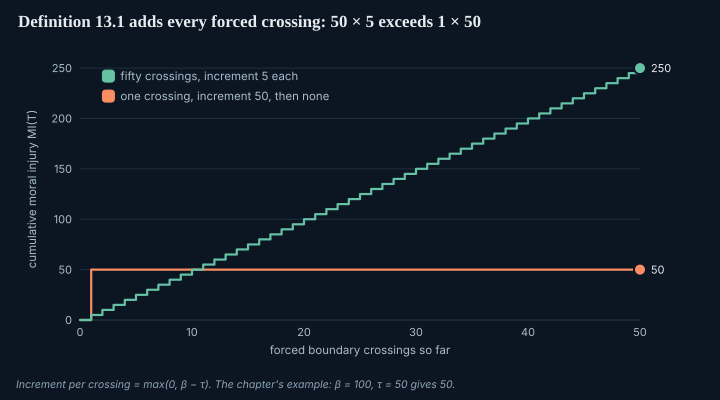
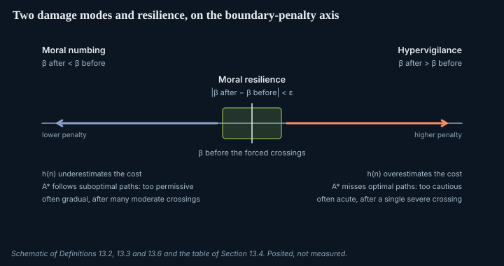

Chapter 13: The Mathematical Theory of Moral Injury
“Burnout is running out of fuel. Moral injury is damage to the engine itself.”
This chapter develops the book’s most original contribution: a mathematical theory of moral injury that distinguishes it structurally from burnout, predicts its accumulation dynamics, and explains its two damage modes — hypervigilance and moral numbing — as opposite perturbations of the same heuristic function. The theory is not merely descriptive. It is predictive: it generates falsifiable claims about which policies will produce moral injury, which clinicians are at highest risk, and which institutional interventions can prevent or mitigate the damage.
Moral injury is not new. Jameton (1984) introduced moral distress in nursing. Litz et al. (2009) developed the concept in military psychology. Dean et al. (2019) reframed clinician distress as moral injury rather than burnout. Epstein and Hamric (2009) documented its cumulative nature — the “moral residue” and “crescendo effect.” Rushton (2018) proposed moral resilience as a counterweight.
What is new is the mathematics. The geometric framework provides the first formal characterization of moral injury as a specific pathology of the clinical decision-making apparatus: not resource depletion ($g(n)$ exhaustion) but heuristic damage ($h(n)$ corruption). This distinction is not semantic — it generates different predictions, different interventions, and different institutional design principles.
13.1 Moral Injury Is Not Burnout
The Structural Distinction
The clinical decision function is $f(n) = g(n) + h(n)$, where:
-
$g(n)$ is the accumulated clinical cost from the starting state to the current state — the evidence-based medicine component. Computing $g(n)$ requires cognitive resources: reading labs, reviewing imaging, synthesizing clinical data.
-
$h(n)$ is the moral-heuristic estimate of remaining cost from the current state to acceptable outcomes — the clinical wisdom component. $h(n)$ is the clinician’s trained intuition about which actions cross moral boundaries and what those crossings cost.
Burnout is $g(n)$-depletion. The clinician’s cognitive and emotional resources for computing $g(n)$ are exhausted by overuse. The clinician is tired, overwhelmed, and unable to process clinical data effectively. The symptoms are emotional exhaustion, depersonalization, and reduced personal accomplishment — the three dimensions of the Maslach Burnout Inventory (MBI).
Burnout is a resource problem. It is addressed by resource solutions: adequate staffing, reasonable work hours, protected time off, peer support.
Moral injury is $h(n)$-damage. The clinician’s heuristic function — the moral intuition that guides pathfinding on the clinical manifold — is permanently altered by forced boundary crossings. The clinician is not necessarily tired (though they may be). They are changed. Their boundary penalties have shifted. Their trust in institutional legitimacy has eroded. Their professional identity has been damaged. They navigate the manifold differently — not because they lack energy but because the map itself has been redrawn by experience.
Moral injury is a structural problem. It is addressed by structural solutions: policy redesign, ethics support, boundary-crossing prevention.
The $2 \times 2$ Matrix
The burnout-moral injury distinction predicts a $2 \times 2$ matrix of clinician states:
| Low Burnout | High Burnout | |
|---|---|---|
| Low MI | Well-functioning clinician | Overworked but morally intact |
| High MI | Ethically damaged but adequately staffed | Both damaged and exhausted |
Each cell has distinct clinical manifestations and requires distinct interventions:
- Low burnout, low MI: The clinician is functioning well. No intervention needed.
- Low burnout, high MI: The clinician is adequately staffed and not exhausted but has been forced to cross moral boundaries. They may appear calm and competent but have permanently altered boundary penalties. Staffing solutions will not help — the problem is not resource depletion but heuristic corruption. This is the most commonly misdiagnosed cell: institutions that see a well-rested clinician and conclude they are fine, when the clinician’s $h(n)$ has been damaged.
- High burnout, low MI: The clinician is exhausted but has not been forced to cross moral boundaries. Rural physicians working excessive hours in ethically supportive environments occupy this cell. Staffing solutions help; ethics interventions are unnecessary.
- High burnout, high MI: Both problems simultaneously. The clinician is exhausted and morally damaged. This is the pandemic ICU physician — overwhelmed by volume and forced to make morally costly triage decisions. Both resource and structural interventions are needed.
Prediction 2 (from the GCE paper). Moral injury (measured by MISS-HP) and burnout (measured by MBI) are statistically dissociable. The framework predicts that MI and burnout will have different correlates: MI correlates with boundary-crossing frequency and protocol disagreement; burnout correlates with workload and staffing ratios. A perfect correlation between MI and burnout would falsify the structural distinction.1
13.2 Moral Injury as Forced Boundary Crossing
The Formal Definition
Definition 13.1 (Moral Injury as Forced Boundary Crossing). A clinician experiences moral injury at time $t$ if the institutionally mandated path $\gamma^*_{\text{inst}}$ requires crossing a moral boundary $k$ that the clinician’s personal manifold assigns a boundary penalty $\beta_k^{(\text{clin})}$ exceeding the clinician’s threshold $\tau$ for tolerable moral cost. The moral injury increment at time $t$ is:
$$\Delta \text{MI}(t) = \sum_k \max\left(0,\; \beta_k^{(\text{clin})} - \tau\right) \cdot \mathbf{1}[\text{boundary } k \text{ crossed at time } t]$$
The cumulative moral injury at time $T$ is:
$$\text{MI}(T) = \sum_{t=1}^{T} \Delta \text{MI}(t)$$
The definition has three critical features:
-
The injury is the gap between the clinician’s boundary penalty and the threshold. A clinician who assigns $\beta_{\text{abandon}} = 100$ and has threshold $\tau = 50$ experiences a moral injury increment of $50$ for each abandonment boundary crossing. A clinician who assigns $\beta_{\text{abandon}} = 40$ and has the same threshold experiences no moral injury — the boundary crossing is within tolerance.
-
The injury is caused by forced crossing, not voluntary crossing. A clinician who voluntarily crosses a boundary (e.g., choosing to perform a risky surgery that they believe is the right decision) experiences boundary-crossing cost but not moral injury, because the crossing is part of their own geodesic computation. Moral injury occurs when the institution mandates a path that crosses boundaries the clinician would not have crossed.
-
The injury is additive. Each forced boundary crossing contributes independently. A clinician who is forced to cross two boundaries in one day accumulates two moral injury increments. A clinician who is forced to cross one boundary every day for a month accumulates thirty increments.
The Three Ingredients of Moral Injury
From the definition, moral injury requires three simultaneous conditions:
-
An institutional mandate: The clinician must be required (by policy, hierarchy, resource constraint, or organizational structure) to follow a specific path on the clinical manifold.
-
A boundary crossing: The mandated path must cross a clinical-moral boundary that the clinician’s heuristic assigns a non-trivial penalty.
-
A penalty-threshold gap: The clinician’s boundary penalty must exceed their tolerance threshold. If the clinician agrees with the mandate (their boundary penalty is low or their threshold is high), the crossing does not produce moral injury — even if it produces moral distress (a brief emotional response that does not cause lasting heuristic damage).
All three conditions must be present. An institutional mandate that does not cross boundaries produces no injury. A boundary crossing that is voluntary (not institutionally mandated) produces no injury. A boundary crossing with a penalty below threshold produces distress but not injury.
13.3 The Moral Injury Accumulation Theorem
Statement and Proof
Theorem 13.1 (Moral Injury Accumulation). Moral injury has three structural properties:
1. Cumulative: $\text{MI}(T)$ is monotonically non-decreasing in $T$. Each forced boundary crossing adds to the total; no subsequent event subtracts from it.
2. Irreversible above threshold: Once $\text{MI}(T) > \text{MI}_{\text{crit}}$ (a clinician-specific critical threshold), the clinician’s heuristic function $h(n)$ is permanently altered. Boundary penalties shift (inflation or deflation). Trust in institutional legitimacy ($d_8$) degrades. Professional identity ($d_7$) is damaged.
3. Structurally distinct from burnout: High MI with low burnout (ethically violating but adequately staffed) and low MI with high burnout (exhausting but ethically supportive) are both possible. The two are independent components of $f(n) = g(n) + h(n)$.
Proof.
(1) follows from the definition: $\Delta \text{MI}(t) \geq 0$ for all $t$ (the $\max$ function ensures non-negativity), so $\text{MI}(T) = \sum_{t=1}^{T} \Delta \text{MI}(t)$ is a sum of non-negative terms and is therefore non-decreasing.
(2) follows from the manifold-damage interpretation of forced boundary crossing. A moral boundary that has been crossed involuntarily is not the same boundary afterward — it has been altered by the crossing. The alteration takes one of two forms (Section 13.4): hypervigilance (the boundary penalty increases) or moral numbing (the boundary penalty decreases). Both are permanent changes to $h(n)$ that alter the clinician’s future pathfinding on the manifold. The permanence follows from the same mechanism that makes trauma responses persistent: the heuristic function is shaped by experience, and experiences of forced boundary crossing are not erased by subsequent experiences of boundary respect.
The critical threshold $\text{MI}_{\text{crit}}$ is the point beyond which the heuristic damage is self-reinforcing: altered boundary penalties cause the clinician to navigate the manifold differently, which exposes them to different boundary crossings, which further alters the penalties. Below $\text{MI}_{\text{crit}}$, the clinician can compensate for altered penalties through conscious recalibration (ethics consultations, reflection, peer support). Above $\text{MI}_{\text{crit}}$, the alteration is too extensive for conscious compensation to fully correct.
(3) follows from the structural independence of $g(n)$ and $h(n)$. Burnout degrades $g(n)$ — the clinician’s capacity to compute accumulated clinical cost (cognitive exhaustion, emotional depletion). Moral injury damages $h(n)$ — the clinician’s moral-heuristic estimate (boundary penalty alteration, trust erosion). A clinician can have high $g(n)$ capacity (well-rested, adequately staffed) and damaged $h(n)$ (forced to implement morally repugnant policies). Conversely, a clinician can have depleted $g(n)$ (exhausted by overwork) and intact $h(n)$ (the work is exhausting but morally unproblematic). $\square$
Implications of the Theorem
The accumulation theorem has four practical implications:
Implication 1: Moral injury is prospectively predictable. Because $\text{MI}(T)$ is a cumulative sum of individual boundary-crossing increments, it can be estimated prospectively. Given a policy $P$ and a clinician population with known $\beta_k$ distributions, the expected moral injury can be computed before the policy is implemented.
Implication 2: Prevention is more effective than treatment. Because MI is irreversible above $\text{MI}_{\text{crit}}$, the primary institutional strategy should be prevention — keeping $\text{MI}(T) < \text{MI}_{\text{crit}}$ — rather than treatment of clinicians who have exceeded the threshold.
Implication 3: Frequency counts as well as severity. A clinician who makes one profoundly morally costly decision ($\Delta \text{MI} = 50$) accumulates less moral injury than a clinician who makes fifty moderately morally costly decisions ($50 \times \Delta \text{MI} = 50 \times 5 = 250$). Because the increments add, the slow accumulation of moderate boundary crossings can be more damaging than the acute impact of a single dramatic crossing. The sum does not by itself weigh frequency above severity: fifty crossings of 5 and one crossing of 250 accumulate the same total.
Implication 4: The two damage modes are clinically distinguishable. Hypervigilance and moral numbing (Section 13.4) produce opposite clinical signatures and can be detected by measuring boundary penalty changes over time.

Figure 13.1. Cumulative moral injury as Definition 13.1 computes it, for the two clinicians of Implication 3 in Section 13.3. The horizontal axis counts forced boundary crossings and the vertical axis is the running sum. One clinician makes a single crossing with an increment of 50 and then none. The other makes fifty crossings with an increment of 5 each and ends at 250. The sum never falls, because each increment is zero or positive. The values are the chapter’s illustration of the definition, not measurements.
13.4 The Two Damage Modes: Hypervigilance and Moral Numbing
Hypervigilance: $\beta_k$ Inflation
Definition 13.2 (Hypervigilance). A clinician exhibits hypervigilance on boundary $k$ when, following forced crossing of boundary $k$, the clinician’s boundary penalty $\beta_k^{(\text{clin})}$ increases beyond its pre-injury value:
$$\beta_k^{(\text{post})} > \beta_k^{(\text{pre})}$$
The clinician becomes risk-averse on the violated dimension, avoiding actions that approach boundary $k$ even when crossing the boundary would be manifold-optimal.
Clinical manifestation: A clinician who was forced to deny ventilators during a pandemic develops an inflated $\beta_{\text{abandon}}$. After the pandemic, she over-triages — holding ventilators in reserve “just in case,” assigning patients to ICU beds they don’t need, refusing to discharge patients who are clinically ready. Each of these actions is manifold-suboptimal: the geodesic would have the clinician allocate resources efficiently, but the inflated boundary penalty makes efficient allocation feel dangerous.
Hypervigilance is the heuristic equivalent of a trauma response: the system has learned that boundary $k$ is dangerous and has overadjusted its estimates to avoid approaching the boundary. The overadjustment degrades clinical decision quality — the clinician’s $h(n)$ is no longer $\varepsilon$-admissible but inadmissible ($h(n) > (1 + \varepsilon) h^*(n)$ in the neighborhood of boundary $k$), causing $A^*$ to miss the optimal path.2
Moral Numbing: $\beta_k$ Deflation
Definition 13.3 (Moral Numbing). A clinician exhibits moral numbing on boundary $k$ when, following repeated forced crossing of boundary $k$, the clinician’s boundary penalty $\beta_k^{(\text{clin})}$ decreases below its pre-injury value:
$$\beta_k^{(\text{post})} < \beta_k^{(\text{pre})}$$
The clinician becomes desensitized to boundary crossings on dimension $k$, crossing the boundary more readily in future decisions — including decisions where crossing is not mandated by the institution.
Clinical manifestation: A clinician in palliative care who has repeatedly continued futile treatment at family request develops a deflated $\beta_{\text{futile}}$. Over time, she stops questioning whether continued treatment serves the patient. She processes orders for aggressive interventions in patients who cannot benefit, without the internal resistance that once characterized her clinical judgment. Her colleagues notice that she has become “efficient” — but the efficiency is moral numbing, not clinical improvement.
Moral numbing is the heuristic equivalent of habituation: the system has learned that boundary $k$ is crossed frequently without catastrophic consequences and has reduced its penalty estimate. The reduction makes the clinician’s $h(n)$ more “relaxed” near boundary $k$ — but the relaxation is a form of heuristic corruption, not genuine recalibration. The boundary’s true cost has not decreased; the clinician’s perception of it has.
Opposite in Direction, Identical in Mechanism
Hypervigilance and moral numbing are opposite in their direction of $\beta_k$ change:
| Feature | Hypervigilance | Moral Numbing |
|---|---|---|
| $\beta_k$ direction | Increases | Decreases |
| Clinical behavior | Risk-averse, avoidant | Desensitized, boundary-crossing |
| $h(n)$ status | Inadmissible (overestimates) | Corrupted (underestimates) |
| $A^*$ effect | Misses optimal paths (too cautious) | Follows suboptimal paths (too permissive) |
| Time course | Often acute (after a single severe crossing) | Often gradual (after many moderate crossings) |
But they are identical in their mechanism: both are permanent alterations of $h(n)$ caused by forced boundary crossing. And both degrade clinical decision quality — hypervigilance by making the clinician too cautious, moral numbing by making the clinician too permissive.
Which Mode Predominates?
The framework predicts that the damage mode depends on the pattern of boundary crossings:
-
Single severe crossing → hypervigilance. A clinician who experiences one catastrophic moral injury event (e.g., causing a patient’s death through a triage decision they disagreed with) is more likely to develop hypervigilance on the relevant boundary. The single event is salient, memorable, and produces a strong learning signal.
-
Repeated moderate crossings → moral numbing. A clinician who experiences many moderate boundary crossings (e.g., daily compromises in a resource-constrained environment) is more likely to develop moral numbing. The repeated crossings desensitize the boundary penalty through habituation.
-
Mixed pattern → mixed response. A clinician may exhibit hypervigilance on one boundary (the one that was crossed most severely) and moral numbing on another (the one that was crossed most frequently). This mixed response is common in pandemic clinicians, who experienced both acute severe crossings (triage decisions) and chronic moderate crossings (restricted family visitation, inadequate PPE).
13.5 The Moral Injury Index
Prospective Risk Assessment
Definition 13.4 (Moral Injury Index). The Moral Injury Index of an institutional policy $P$ is the expected cumulative moral injury imposed on a clinician operating under $P$:
$$\text{MI}(P) = \mathbb{E}\left[\sum_t \sum_k \max\left(0,\; \beta_k^{(\text{clin})} - \tau\right) \cdot \mathbf{1}[P \text{ requires crossing boundary } k \text{ at } t]\right]$$
where the expectation is over the distribution of clinical scenarios encountered under normal operations and the distribution of clinician $\beta_k$ values.3
Proposition 13.1 (Institutional Moral Injury Is Predictable). The Moral Injury Index $\text{MI}(P)$ can be estimated before a policy is implemented, by:
1. Surveying clinicians to estimate the distribution of $\beta_k^{(\text{clin})}$ (boundary penalties in the clinician population’s moral manifold).
2. Analyzing the policy $P$ to identify which clinical scenarios require boundary crossing.
3. Computing the expected frequency of those scenarios from historical case-mix data.
A policy with $\text{MI}(P) > \text{MI}_{\text{crit}}$ is predicted to produce moral injury in the clinician workforce. This prediction is testable against moral distress scores (MDS-R) and moral injury symptom scales (MISS-HP).
Using the Moral Injury Index in Policy Design
The Moral Injury Index transforms moral injury from an unavoidable tragedy into a prospectively manageable institutional risk. Before implementing a new triage protocol, an institution can:
- Compute $\text{MI}(P)$ for the proposed protocol.
- Identify the dominant boundary-crossing scenarios — which specific clinical situations produce the most moral injury.
- Redesign the protocol to minimize unnecessary boundary crossings: substitute lottery allocation for criterion-based allocation when prognoses are similar; separate the triage decision from the treating clinician; provide structured debriefing after every boundary-crossing event.
- Recompute $\text{MI}(P_{\text{revised}})$ and compare with the original.
- Monitor actual moral injury after implementation and compare with the prediction.
Example: A hospital’s original COVID-19 triage protocol required individual physicians to decide which patients received ventilators. $\text{MI}(P_{\text{original}})$ was high because the triage decision crossed the abandonment boundary ($\beta_{\text{abandon}}$) for the denying physician’s patients.
The revised protocol established a triage committee that made allocation decisions without a prior relationship to any of the patients. The treating physician communicated the decision but did not make it. $\text{MI}(P_{\text{revised}}) < \text{MI}(P_{\text{original}})$ because the boundary-crossing cost was distributed across a committee (each member bears a fraction of $\beta_{\text{abandon}}$) rather than concentrated on a single clinician.
13.6 The Geometry of Moral Injury: Formal Properties
Moral Injury as Path-Dependent Curvature Accumulation
In the Riemannian formulation, moral injury has a natural geometric interpretation: it is the accumulated curvature along the clinician’s path through the clinical-moral manifold.
Each boundary crossing corresponds to passage through a region of high curvature on the manifold — a region where the metric changes rapidly and the heuristic gradient is steep. The cumulative boundary-crossing cost is analogous to the total holonomy accumulated by a vector transported along a curved path: the vector arrives “rotated” (the heuristic is altered) by an amount proportional to the integrated curvature.
$$\text{MI}(T) \sim \int_0^T \mathcal{K}(\gamma(t))\, dt$$
where $\mathcal{K}(\gamma(t))$ is the curvature of the clinical-moral manifold at the point $\gamma(t)$ along the clinician’s path, and the integral is the total curvature accumulated over the path.
This formulation makes explicit a key feature of moral injury: it is path-dependent. Two clinicians who arrive at the same endpoint on the manifold (same clinical outcomes, same number of patients treated) may have different moral injury if they took different paths — one through high-curvature regions (frequent boundary crossings) and the other through low-curvature regions (no boundary crossings). The moral injury is a property of the path, not the endpoint.
The Moral Injury Tensor
Just as moral injury is not a scalar (it depends on which boundaries were crossed, not just how many), it can be represented as a vector or tensor:
Definition 13.5 (Moral Injury Vector). The moral injury vector $\vec{\text{MI}}(T)$ has one component for each boundary type:
$$\vec{\text{MI}}(T) = \left(\text{MI}_{\text{harm}}(T), \text{MI}_{\text{futile}}(T), \text{MI}_{\text{consent}}(T), \text{MI}_{\text{abandon}}(T), \text{MI}_{\text{sacred}}(T)\right)$$
where each component is the cumulative moral injury from crossings of the corresponding boundary.
Different clinical settings produce different moral injury vectors:
- Pandemic ICU: $\vec{\text{MI}} = (0, \text{moderate}, 0, \text{high}, 0)$ — dominant injury from abandonment boundary crossings (triage denials), moderate from futility (continuing treatment for patients who will not survive).
- Palliative care: $\vec{\text{MI}} = (0, \text{high}, \text{moderate}, 0, 0)$ — dominant injury from futility boundary (continuing aggressive treatment at family insistence), moderate from consent boundary (patients who lack capacity).
- Psychiatry: $\vec{\text{MI}} = (0, 0, \text{high}, 0, 0)$ — dominant injury from consent boundary (involuntary treatment).
The vector representation reveals that “moral injury” is not a single construct — it is a profile of boundary-specific damages. Two clinicians with equal scalar MI may have radically different MI vectors, requiring different interventions.
13.7 The Moral Injury Threshold: $\text{MI}_{\text{crit}}$ and Its Estimation
What Determines the Critical Threshold?
The Moral Injury Accumulation Theorem states that $h(n)$ alteration is irreversible above a clinician-specific critical threshold $\text{MI}_{\text{crit}}$. Below this threshold, the clinician can compensate for altered $\beta_k$ through conscious recalibration. Above it, the alteration is self-reinforcing and permanent.
But what determines $\text{MI}_{\text{crit}}$? The framework identifies three contributing factors:
Factor 1: Baseline heuristic robustness. Clinicians with more diversely calibrated heuristics — those who have navigated many different regions of the clinical manifold during training — have higher $\text{MI}_{\text{crit}}$. Their heuristic function has been tested and calibrated in multiple contexts, making it more resistant to perturbation by any single boundary crossing. This is the geometric interpretation of why broad clinical training produces more resilient clinicians.
Factor 2: Social support infrastructure. Clinicians with strong peer support, regular ethics consultation access, and institutional recognition of moral cost have higher effective $\text{MI}_{\text{crit}}$ — not because their heuristic is intrinsically more robust, but because the support infrastructure provides ongoing recalibration that offsets accumulating damage. The support system functions as a continuous repair mechanism, raising the effective threshold by recalibrating $\beta_k$ before the damage becomes self-reinforcing.
Factor 3: Concordance between personal and institutional values. Clinicians whose personal $\beta_k$ profiles are well-aligned with their institution’s policies have higher effective $\text{MI}_{\text{crit}}$, because fewer institutional mandates cross their personal boundaries. A clinician who works at an institution whose values match their own experiences fewer forced boundary crossings per unit time, extending the period before $\text{MI}_{\text{crit}}$ is reached.
Estimating $\text{MI}_{\text{crit}}$
The critical threshold cannot be measured directly — it is defined as the point beyond which heuristic damage becomes irreversible, and this point is identified retrospectively (when permanent $\beta_k$ alteration is observed) rather than prospectively.
However, the framework suggests proxy indicators that a clinician is approaching $\text{MI}_{\text{crit}}$:
-
Increasing $\beta_k$ variance over time. As moral injury accumulates, the clinician’s boundary penalties become more variable — some inflating (hypervigilance), others deflating (numbing). The increasing variance is a signal of heuristic destabilization.
-
Decreasing recalibration responsiveness. A clinician early in moral injury accumulation responds to ethics consultations with measurable $\beta_k$ correction. A clinician approaching $\text{MI}_{\text{crit}}$ shows diminishing responsiveness — the recalibration effect becomes smaller with each session. This is analogous to treatment resistance in depression: the system becomes less responsive to therapeutic intervention as the damage accumulates.
-
Identity dimension deterioration. As cumulative moral injury approaches $\text{MI}_{\text{crit}}$, the clinician’s $d_7$ (professional identity) deteriorates — they describe themselves as “not the clinician I used to be,” express doubt about their professional competence, or consider leaving medicine. These are not merely emotional responses; they are manifestations of $h(n)$ damage on the identity dimension of the clinician’s own manifold.
Proposition 13.2 (Approaching $\text{MI}_{\text{crit}}$ Is Detectable). The approach to $\text{MI}_{\text{crit}}$ can be detected by monitoring three proxy indicators: increasing $\beta_k$ variance, decreasing recalibration responsiveness, and $d_7$ deterioration. These indicators, measured longitudinally, can trigger preventive intervention before irreversible damage occurs.
This proposition has immediate practical implications: institutions that monitor these indicators can identify clinicians at risk and intervene (rotation, increased ethics support, reduced boundary-crossing exposure) before the threshold is crossed.
13.8 Individual Vulnerability and Resilience
Pre-Injury $\beta_k$ Profiles as Vulnerability Predictors
The moral injury increment $\Delta \text{MI}(t) = \sum_k \max(0, \beta_k^{(\text{clin})} - \tau)$ depends on the clinician’s pre-existing boundary penalties. Clinicians with high $\beta_k$ values — those who assign high cost to boundary crossings — are more vulnerable to moral injury from forced crossings of boundary $k$.
Prediction 5 (from the GCE paper). Clinician resistance to utilitarian triage protocols should correlate with pre-crisis $\beta_k$ profiles. Specifically, clinicians with high $\beta_{\text{abandon}}$ and $\beta_{\text{justice}}$ should show more resistance to utilitarian triage and higher MI when forced to implement it.
This prediction is novel and testable. It implies that moral injury vulnerability can be assessed prospectively by measuring clinicians’ $\beta_k$ profiles before a crisis. Clinicians with high-$\beta$ profiles on the boundaries most likely to be crossed by the crisis protocol should receive additional support, role rotation, or assignment to non-triage roles.
This is not a recommendation to exclude high-$\beta$ clinicians from difficult work. High-$\beta$ clinicians may be the best clinicians — they have the most finely calibrated heuristics, the strongest moral commitments, and the deepest concern for patient welfare. The recommendation is to protect them by minimizing their exposure to forced boundary crossings, not to penalize them for their moral sensitivity.
Moral Resilience in the Geometric Framework
Rushton’s (2018) concept of moral resilience — “the capacity of an individual to sustain or restore their integrity in response to moral complexity, confusion, distress, or setbacks” — maps onto the geometric framework as the maintenance of $\varepsilon$-admissible $h(n)$ despite boundary crossings below threshold.
Definition 13.6 (Moral Resilience). A clinician exhibits moral resilience when, following forced boundary crossings with $\text{MI}(T) < \text{MI}_{\text{crit}}$, the clinician’s boundary penalties $\beta_k$ remain within $\varepsilon$ of their pre-injury values:
$$|\beta_k^{(\text{post})} - \beta_k^{(\text{pre})}| < \varepsilon_{\text{resilience}} \quad \text{for all } k$$
The distinction between moral resilience and moral numbing is precise:
- Moral resilience: $\beta_k$ remains approximately calibrated. The clinician processes the boundary crossing, integrates it into their moral framework, and continues to assign appropriate cost to future crossings.
- Moral numbing: $\beta_k$ decreases. The clinician processes the boundary crossing by reducing the perceived cost of future crossings.
The framework predicts that resilience-trained clinicians should show stable $\beta_k$ profiles over time, while morally injured clinicians should show either inflation (hypervigilance) or deflation (numbing). This prediction is testable: measure $\beta_k$ profiles longitudinally in clinicians exposed to repeated boundary crossings, and compare profiles of clinicians with and without resilience training.

Figure 13.2. The two damage modes and moral resilience as Definitions 13.2, 13.3 and 13.6 state them, on one axis: a clinician’s penalty for a boundary after forced crossings, compared with the value before. Moral numbing is a penalty that has fallen below the earlier value; hypervigilance is one that has risen above it; resilience is one that stays within a tolerance of it. The lines under each mode are the features the table of Section 13.4 posits. The chapter gives directions only, so no scale is drawn.
13.9 Sarah’s Moral Injury
Sarah’s first moral injury event is not dramatic. It is quiet.
She denies a ventilator to Mrs. Washington — the 78-year-old retired teacher she had cared for two months earlier. The triage protocol assigns Mrs. Washington to comfort care. Sarah implements the decision.
That night, she sleeps seven hours. She is not exhausted — she is adequately staffed, the ICU has enough nurses, and her shift length is reasonable. She is not burned out.
But something has changed.
The next morning, she hears the triage pager and feels a new sensation: a flinch. Not fatigue — she is well-rested. Not anxiety — she has managed anxiety before. A flinch. The sound of the pager is now associated with the experience of crossing a boundary she considers sacred. Her $\beta_{\text{abandon}}$ has been inflated by the Mrs. Washington decision.
Over the following days, Sarah notices the inflation’s effects on her clinical decision-making:
- She hesitates before recommending triage for new patients, even when the clinical indication is clear.
- She holds ventilators in reserve “just in case” a sicker patient arrives — a strategy that is manifold-suboptimal (it leaves ventilators unused while patients who could benefit go without).
- She begins to over-document her triage decisions, spending twenty minutes on chart notes that used to take five — not because the documentation is clinically necessary but because she feels a need to justify the boundary crossing to herself and to a future reviewer.
Each of these behaviors is the clinical signature of hypervigilance: an inflated $\beta_{\text{abandon}}$ that causes avoidance of the boundary even when approaching it would be geodesic-optimal.
Three weeks later, she notices a different change. She no longer feels the flinch when the triage pager sounds. She processes triage decisions efficiently, without hesitation, without the internal resistance that characterized her first two weeks. She has stopped spending twenty minutes on chart notes and returned to five.
She worries about this more than she worried about the flinch. The flinch was painful but it was hers — it reflected boundary penalties that she considered appropriate. The efficiency is not hers — it reflects a deflation of those penalties by repeated crossing.
She is experiencing the transition from hypervigilance to moral numbing. The acute trauma response (inflated $\beta_k$) has given way to habituation (deflated $\beta_k$). She is crossing boundaries that she once would have found intolerable, and crossing them without distress.
One evening, after implementing a triage decision without hesitation — a decision that would have kept her awake a month ago — Sarah sits in the call room and thinks about the trajectory of her heuristic function. She is not the clinician she was before the pandemic. Her $h(n)$ has been altered on the abandonment dimension: first inflated (hypervigilance), then deflated (numbing). The boundary that was sacred to her six weeks ago is now routine.
She does not know which is worse: the version of herself that flinched at every triage decision, or the version that processes them without flinching. The geometric framework provides the answer: both are forms of $h(n)$ damage, both degrade clinical decision quality, and neither can be undone by will or by rest. The damage is to the engine, not the fuel.
Sarah’s cumulative moral injury $\text{MI}(T)$ has exceeded her critical threshold $\text{MI}_{\text{crit}}$. She knows this not because she has computed it but because she recognizes the symptoms: altered boundary penalties, reduced institutional trust, compromised professional identity. She is functioning — she continues to make competent clinical decisions — but she is functioning with permanently altered heuristics.
The question for Part V of this book is not whether moral injury can be eliminated — the Accumulation Theorem says it cannot, above threshold. The question is whether institutions can be designed to keep $\text{MI}(T) < \text{MI}_{\text{crit}}$ — to prevent the damage before it becomes irreversible. That is the subject of Chapter 15.
Chapter Summary
Moral injury is mathematically characterized as the cumulative cost of forced boundary crossings on the clinical decision complex — structurally distinct from burnout ($g(n)$-depletion) as $h(n)$-damage to the clinician’s moral heuristic function. The Moral Injury Accumulation Theorem establishes three properties: moral injury is cumulative (monotonically non-decreasing), irreversible above a critical threshold (permanently altering the heuristic), and structurally dissociable from burnout (high MI with low burnout and low MI with high burnout are both possible). Forced boundary crossing produces two opposite damage modes — hypervigilance (inflated boundary penalties causing risk-aversion) and moral numbing (deflated boundary penalties causing desensitization) — both of which degrade clinical decision quality. The Moral Injury Index $\text{MI}(P)$ enables prospective estimation of a policy’s moral injury before implementation, transforming moral injury from an unavoidable tragedy into a manageable institutional risk. The moral injury vector $\vec{\text{MI}}(T)$ captures the boundary-specific profile of damage, revealing that “moral injury” is not a single construct but a multi-dimensional pattern requiring setting-specific assessment and intervention.
-
The $g(n)$-$h(n)$ distinction for burnout and moral injury is not merely an analogy. It is a structural claim about the clinical decision-making apparatus: the components that burnout degrades ($g(n)$: cognitive capacity for evidence processing) are functionally independent of the components that moral injury damages ($h(n)$: moral-heuristic boundary penalties). This independence is the basis for the $2 \times 2$ prediction and is testable by measuring the correlation between burnout instruments (MBI) and moral injury instruments (MISS-HP). ↩
-
The hypervigilance/numbing dichotomy parallels the PTSD literature’s distinction between hyperarousal and emotional numbing as two response patterns to trauma. The geometric framework provides a unified mechanism (boundary penalty perturbation) that generates both responses as opposite directions of the same parameter change, rather than treating them as separate phenomena requiring separate theories. ↩
-
The Moral Injury Index is conceptually related to the “risk assessment” instruments used in occupational health — but it operates on the moral manifold rather than the physical safety manifold. Just as a workplace safety assessment identifies physical hazards before they cause injury, the Moral Injury Index identifies moral hazards before they cause heuristic damage. ↩